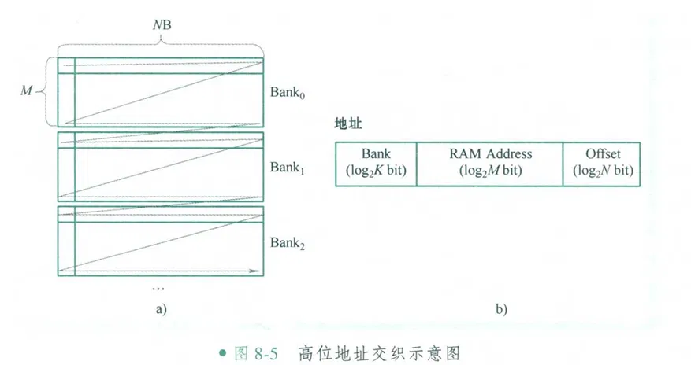
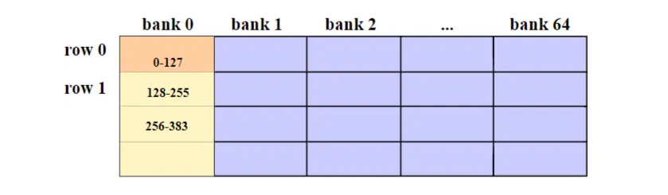
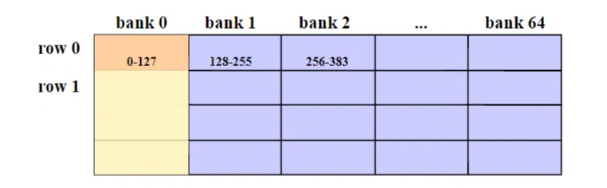
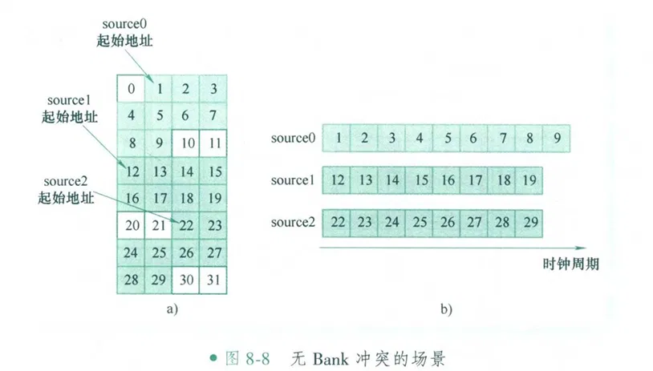
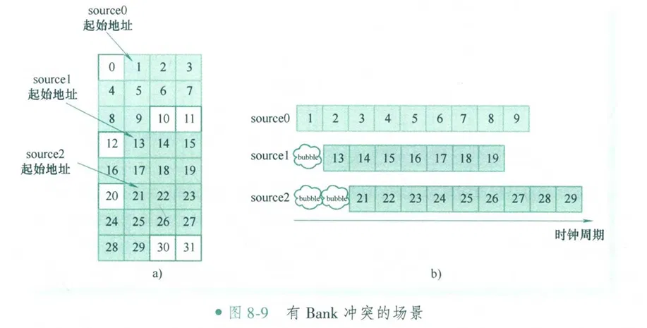
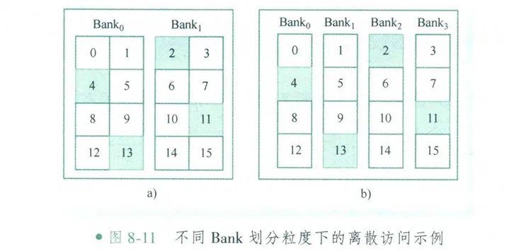
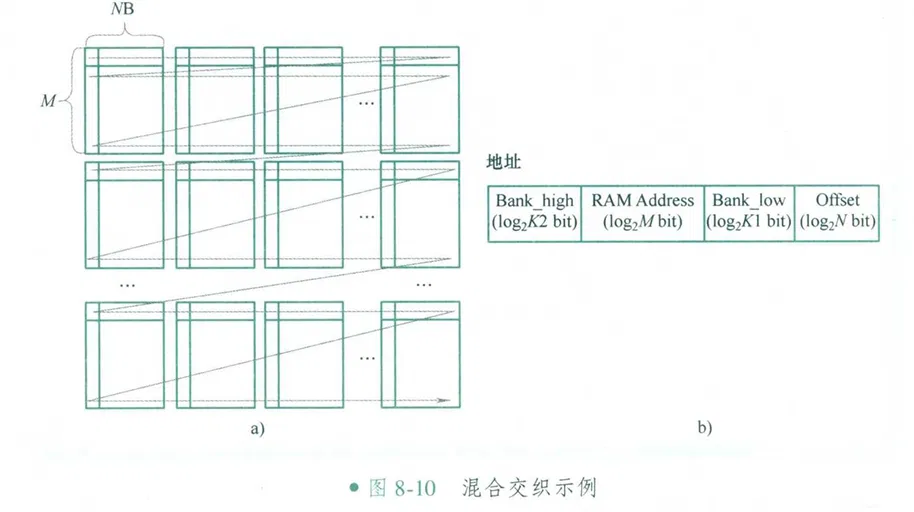

# 前言
软件离不开硬件，硬件也离不开软件啊。作为 “根本不了解硬件” 的我，也不得不去了解和学习硬件的基本概念。本篇文章 Cache 缓存设计的相关内容。
内容和图源自书籍《AI 处理器硬件架构设计》，请参考。
错误在所难免，还望不吝赐教。
# Cache
NPU 的 Cache 设计与其通用 CPU/GPU 的 Cache 有很大不同，核心目标是满足高吞吐、可预测的流式数据访问，而非处理通用计算的随机访问。
NPU L2 Cache 的定位：
- 1. 容量大，带宽极高：作为片上 “数据水库”，为多个计算核心（Tensor Core/Matrix Unit）或向量单元提供数据。8MB 是一个常见且合理的尺寸。
- 2. 服务于规律的数据搬运：NPU 的计算模式通常是 “权重加载 + 输入数据滑动窗口” 或 “大型矩阵分块计算”。数据访问模式在编译期就可高度预测。
- 3.Bank 冲突是主要敌人：并行计算单元（例如 256x256 的矩阵乘）会同时请求海量数据（如一整行或一整列）。如果 Bank 规划不当，多个请求落在同一个 Bank，就会造成严重的排队延迟，极大降低算力利用率。
- 4. 简化控制逻辑：相较于 CPU Cache 复杂的替换算法（如 LRU），NPU L2 的替换策略更直接，常由编译器进行显式管理
# Cache 主要有三种映射方式
# 1. 高位交叉（High-Order Interleaving）
现代 NPU/GPU 中的 Cache（如 L2 Cache）在物理上通常被组织为一个由多个独立存储体（Bank）组成的阵列，每个 Bank 拥有自己的地址解码、数据读写端口和控制逻辑，Bank 之间可以并行工作。每个 Bank 在每个时钟周期内，都能完成对其内部一整行（即一个 Cache Line）数据的读取或写入。

上图是高位交叉的地址映射示意图。
地址可以分为 3 个域段： 最低域段为 Offset 域段， 用于指示 Bank 每行内地址偏移； 中间域段为 RAM Address 域段，用于指示 RAM 的行数； 最高域段为 Bank 域段， 指示访问的是哪个 Bank。
这种映射方式，是将数据地址的高位来生成 Bank ID，而数据一般是连续的，所以数据倾向于存储在同一个 Bank 中。
这种映射逻辑下，同一个 Bank 内的地址是连续的：

可以很容易联想到：如果程序访问一段连续数据（如一个张量），所有请求都打到同一个 Bank- 其他 Bank 闲置，会造成很大的带宽浪费。
# 2. 低位交叉（Low-order Interleaving）

上图是低位交叉的地址映射示意图。
这种映射方式是 取地址中间的几位（通常是行内偏移 Offset 之上的几位）作为 Bank ID。如 Bank ID = addr [13:8]。
地址可以分为 3 个域段： 最低域段为 Offset 域段， 用于指示 Bank 每行内地址偏移；中间域段为 Bank 域段， 指示访问的是哪个 Bank； 最高域段为 RAM Address 域段， 用于指示 RAM 的行数。
这时候一段连续的数据，其低位地址时连续变化的，因此倾向于被映射到 Cache 的同一行的不同 bank 中。
这种映射逻辑下，相邻 Bank 间同一行的 Cache line 的地址是连续的，跨 bank 连续 ：

可以很容易联想到：如果这时候程序访问一段连续数据（如一个张量），请求会分散到多个 bank 中，访问效率会高很多。
再进一步探讨下低位交叉：
低位交叉的 bank 冲突
为方便说明，假设每个访问源每个时钟周期只访问一个字节。 假设每列数据都在同一个 Bank 中， 整系统共 4 个 Bank， 每个 Bank 的宽度为 1B。source0 的起始地址为 1， 访问长度为 9B， source1 的起始地址为 12， 访问长度为 8B， source2 的起始地址为 22， 访问长度为 8B。

假设 source0～ source2 同时发起访存请求， 由于它们的起始地址在不同的 Bank 中， 因此三者之间可进行无冲突的并行访问。

假设 3 个访问源的起始地址都落在了同一个 Bank 中， 并且 3 个访问源是同时发起访存请求的， 则首个访问请求出现了 Bank 冲突。
这种情况下，假设轮询仲裁器的轮询顺序是 source0→source1→source2， 则 source1 会被反压一个时钟周期， source2 会被反压两个时钟周期。
但一般来说，这种访问的数据量都比较大，只在首次访问时进行的几个时钟周期的反压对整体的性能影响较小。
Bank 划分粒度对访存效率的影响

上图左边，假设整个地址空间分为两个 Bank， Bank 宽度为 2B，而右边，整个地址空间分为 4 个 Bank， Bank 宽度为 1B。有一个指令，希望读取 Cache 中的 2、 4、 11 和 13 四个地址。
由于第一种划分方式，Bank0 中的 4 和 13 不在同一行，需要两个周期才能访问。Bank1 中的 2 和 11 也需要两个周期才能访问得到。而 bank0 和 bank1 能够并行，所以整体需要两个周期。
第二种划分方式，四个 bank 都能并行，所以能够一个周期，将所有数据访问到。
所以，划分更多 bank 能够有更高的访问效率，但是 bank 更多也会带来布线、面积、成本上的困难。

上图是一个新的例子，有两个请求，source a 和 source b，分别访问 [14-21] 和 [38-45] 的数据，也不难分析，第一种划分方式，需要两个周期，而第二种方式，只需要一个周期。
# 3. 混合交叉
混合交叉的主流方案是 Bank Group（存储体分组）
混合交叉顾名思义，就是结合了高位交叉和低位交叉。

上图所示为混合交叉的地址映射示意图。
混合交叉将 Bank 划分为组（group），图中的每一列都是一组，组和组之间采用低位交叉，组内采用高位交叉。
例如假设有 64 个 bank，将其中 8 个 bank 划分成一组，那么就是 8 group * 8 bank。此时一段连续的数据，倾向于这样映射：第一块 128B 数据映射到 group0，第二块 128B 数据映射到 group1…… 第九块 128B 数据又映射到 group0 。而最终映射到 group0 的若干块数据，倾向于映射到同一个 bank，比如 bank5（每个 group 8 个 bank）。
将低位交叉改进为混合交叉，可能有以下原因：
1. 两级地址映射，减少排线复杂度和面积占用。（不懂硬件，我也不清楚）
2. 将冲突区域从全局变成局域。
纯低位交叉，所有的数据都会分散到 64 个 bank 中，当许多请求来访问各自的数据的时候，他们之间都会出现互相干扰，导致所有请求都无法及时完成，冲突域是全局的。而混合交叉，会将各个冲突域限制在所有 group 的某个 bank 中，比如这些请求都在访问所有 group 的第 2 个 bank，group 中的其他 bank 仍然处于可用状态。
就像一个大型体育馆被分成了 8 个独立的区域，一场骚乱最多只能让每个区域的一个入口堵塞，其他 7 个入口和区域内部的大部分空间仍然可用，从而保证了系统在最坏情况下仍有基本的通行能力和吞吐量。
# NPU Cache 设计选择
# 高位交叉相比低位交叉的缺点
1. 通用性与编程复杂度
高位交叉需要显式管理 Bank 分配，低位交叉能够自动分散。
NVIDIA CUDA、Google TensorFlow 等框架开发者更倾向于透明管理的方案。
2. 负载不均衡
高位交叉，运行过程中只有某个或某几个 bank 处于活跃状态，其他 bank 都未利用。
低位交叉，所有 bank 都处于活跃状态。
3. 动态调度困难
现代 NPU/GPU 支持：动态并行（Dynamic Parallelism）抢占式多任务（Preemptive Multitasking）实时推理（Real-time Inference）等
比如多模型并发执行： 基本没法为多个模型共同分配不冲突的 bank。
时间片 0：运行 ResNet-50（按高位交叉分配 Bank 0-31）
时间片 1：需要运行 BERT（但理想 Bank 0-31 被占用）
解决方案：要么等待，要么接受次优分配
4. 内存碎片化
高位交叉会导致严重的内部碎片
# 选择
从以上分析来开看，在通用、硬件自动管理的 GPU/NPU 缓存设计中，高位交叉是低效的。
但是！但是！而对于追求极致效率与确定性的专用 NPU 来说，类似高位交叉的内存管理可能更适用。
因为其核心不是传统缓存，而是一个可以由软件显式管理的统一缓冲区。
神经网络的计算图在编译时是完全已知、静态的。计算图和数据流在编译期完全确定、可预测。
“访存” 不是一个被动的、随机的读取过程，而是一个由编译器主动编排的、与计算精确同步的 “数据供给流水线”。
这种情况下，NPU 编译器要在神经网络模型编译的过程中，就要将可能存在并行的 Tensor 安排进不会产生冲突的 Bank 中。将数据连续存放在同一个 bank 中，就不再是效率瓶颈，而是通过微指令的流水线，获取可靠和稳定的数据供给，让数据搬出、计算同时、结果存储进行。这时候即使将 Tensor 分散在不同的 bank 中，也不会明显增加执行速度，还可能因为访存的潜在冲突和不确定性，拖累整个执行速度。
至于以上 “高位交叉相对于低位交叉的缺点” 中的其他问题，我也不清楚如何解决。也许，车到山前必有路呢？
一条大河波浪宽
风吹稻花香两岸
我家就在这岸上住
听惯了艄公的号子
看惯了船上的白帆
# 后记
我也不清楚以上内容有多少错误，有哪些不足，不过这些东西总会在前行的道路上逐渐出现，并得以解决。
本博客目前以及可预期的将来都不会支持评论功能。各位大侠如若有指教和问题，可以在我的 github 项目 或随便一个项目下提出 issue，并指明哪一篇博客，看到一定及时回复！